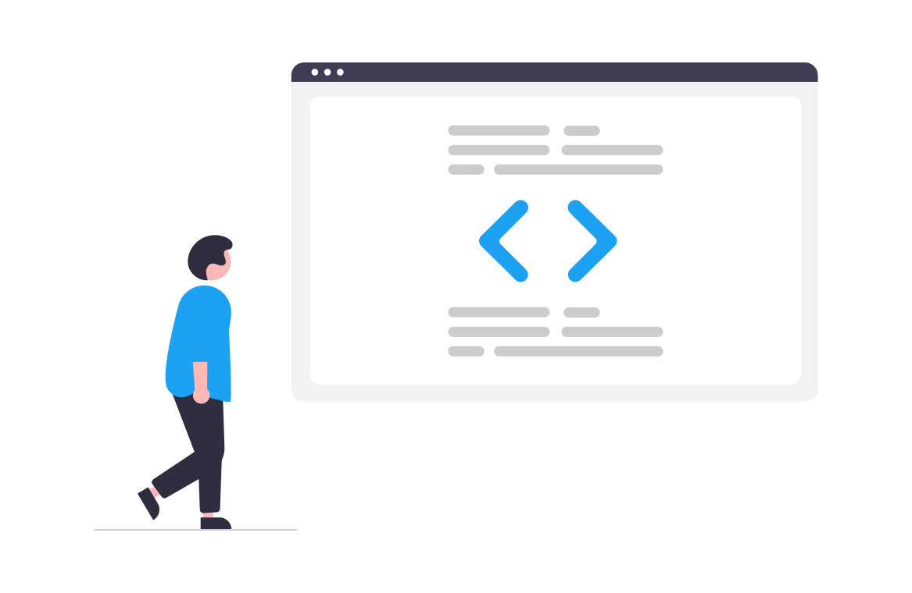

About me
My name is Matjaž Simonič and I'm computer scientist and computer science teacher at elementary school Danila Lokarja Ajdovščina in Slovenia. Since young age I was interested in computers, how they work and how to make desired changes. Because of that I enrolled into computer science school in Nova Gorica and since then been a hobbyist programmer, focusing on HTML, CSS and JavaScript.
In my free time I do a lot of volunteering work, working with youth leading larger groups of kids on weekly basis. For the longest time I also have interest in sports and physical activities wich I do daily.


Contact
My main email address is simonic.matjaz(at)gmail.com, but you can also find me on following social media: